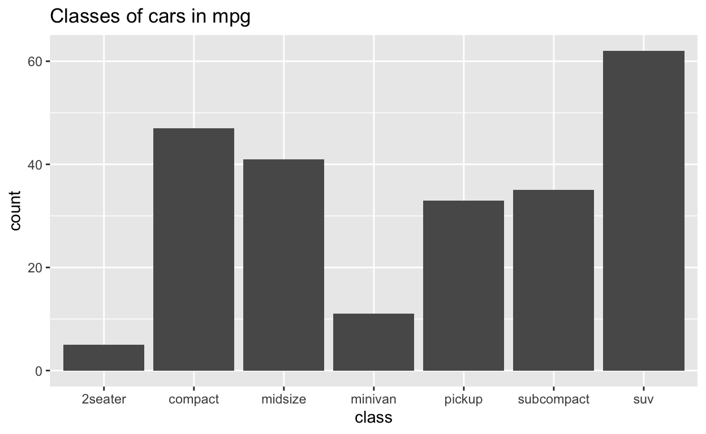
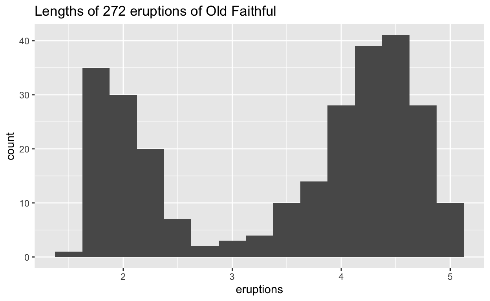
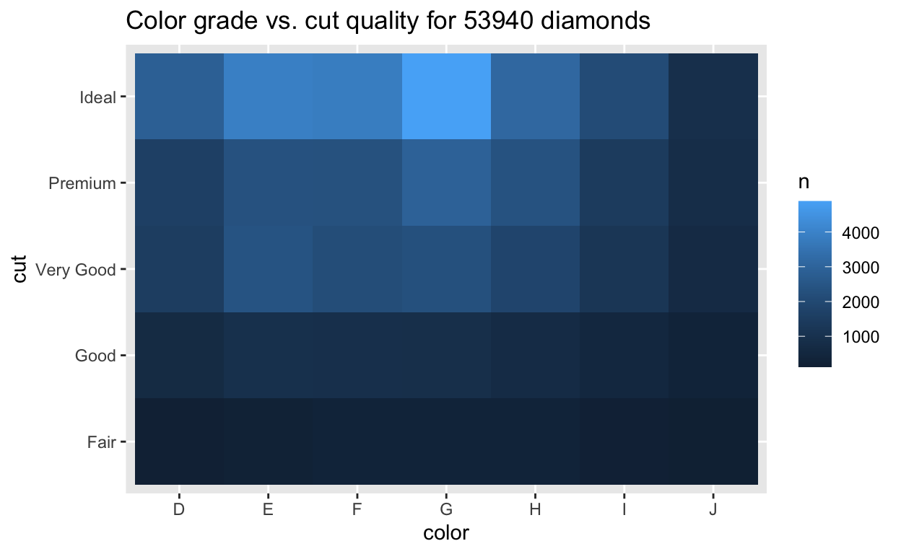
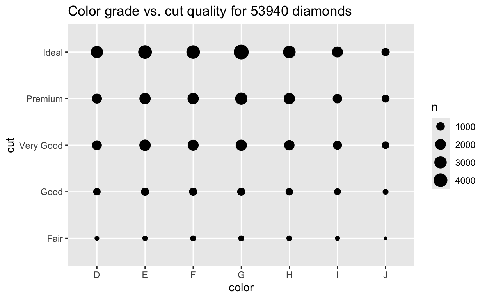
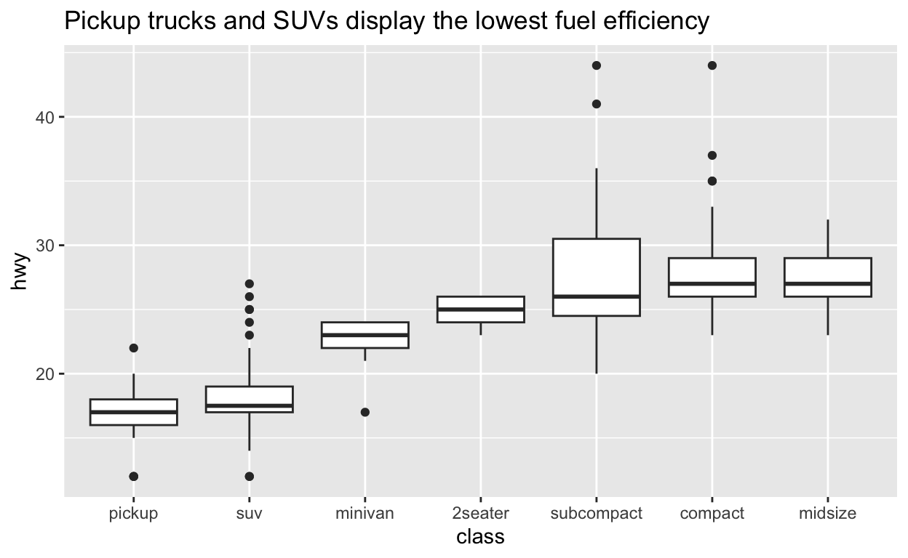
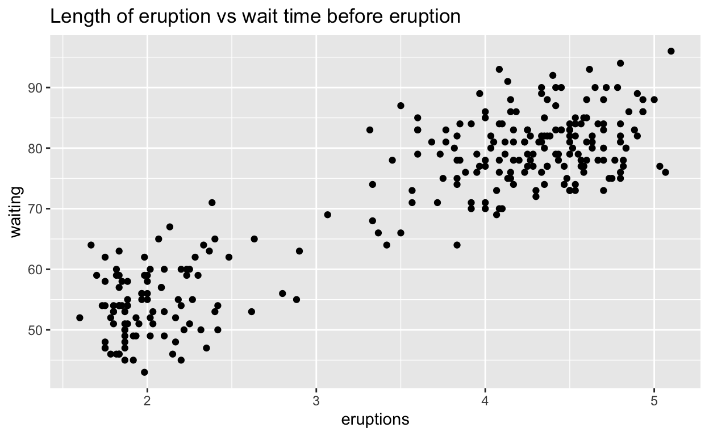

Welcome
This tutorial will show you how to explore your data in a systematic way, a task that statisticians call exploratory data analysis, or EDA for short. In the tutorial you will:
- Learn a strategy for exploring data
- Practice finding patterns in data
- Get tips about how to use different types of plots to explore data
The tutorial is excerpted from R for Data Science by Hadley Wickham and Garrett Grolemund, published by O’Reilly Media, Inc., 2016, ISBN: 9781491910399. You can purchase the book at shop.oreilly.com.
Exploratory Data Analysis
What is EDA?
EDA is an iterative cycle that helps you understand what your data says. When you do EDA, you:
Generate questions about your data
Search for answers by visualising, transforming, and/or modeling your data
Use what you learn to refine your questions and/or generate new questions
EDA is an important part of any data analysis. You can use EDA to make discoveries about the world; or you can use EDA to ensure the quality of your data, asking questions about whether the data meets your standards or not.
The EDA mindset
EDA is not a formal process with a strict set of rules. More than anything, EDA is a state of mind. During the initial phases of EDA, you should feel free to investigate every idea that occurs to you. Some of these ideas will pan out, and some will be dead ends. As your exploration continues, you will home in on lines of inquiry that reveal insights worth writing up and communicating to others.
Questions
Your goal during EDA is to develop an understanding of your data. The easiest way to do this is to use questions as tools to guide your investigation. When you ask a question, the question focuses your attention on a specific part of your dataset and helps you decide which graphs, models, or transformations to make.
“Far better an approximate answer to the right question, which is often vague, than an exact answer to the wrong question, which can always be made precise.” — John Tukey
Quantity vs Quality
EDA is, fundamentally, a creative process. And like most creative processes, the key to asking quality questions is to generate a large quantity of questions. It is difficult to ask revealing questions at the start of your analysis because you do not know what insights are contained in your dataset. On the other hand, each new question that you ask will highlight a new aspect of your data and increase your chance of making a discovery. You can quickly drill down into the most interesting parts of your data—and develop a set of thought-provoking questions—if you follow up each question with a new question based on what you find.
“There are no routine statistical questions, only questionable statistical routines.” — Sir David Cox
Two useful questions
There is no rule about which questions you should ask to guide your research. However, two types of questions will always be useful for making discoveries within your data. You can loosely word these questions as:
What type of variation occurs within my variables?
What type of covariation occurs between my variables?
The rest of this tutorial will look at these two questions. To make the discussion easier, let’s define some terms…
Definitions
A variable is a quantity, quality, or property that you can measure.
A value is the state of a variable when you measure it. The value of a variable may change from measurement to measurement.
An observation or case is a set of measurements made under similar conditions (you usually make all of the measurements in an observation at the same time and on the same object). An observation will contain several values, each associated with a different variable. I’ll sometimes refer to an observation as a case or data point.
Tabular data is a table of values, each associated with a variable and an observation. Tabular data is tidy if each value is placed in its own cell, each variable in its own column, and each observation in its own row.
So far, all of the data that you’ve seen has been tidy. In real-life, most data isn’t tidy, so we’ll come back to these ideas again in Data Wrangling.
Review 1 - Discovery or Confirmation?
You can think of science as a process with two steps: discovery and confirmation. Scientists first observe the world to discover a hypothesis to test. Then, they devise a test to confirm the hypotheses against new data. If a hypothesis survives many tests, scientists begin to trust that it is a reliable explanation of the data.
The separation between discovery and confirmation is especially important for data scientists. It is easy for patterns to appear in data by coincidence. As a result, data scientists first look for patterns, and then try to confirm that the patterns exist in the real world. Sometimes this confirmation requires computing the probability that the pattern is due to random chance, a task that often involves collecting new data.
Review 2 - Quality or Quantity?
Review 3 - Definitions
iris is a famous toy data set that comes with R. The
data set describes 150 iris flowers. Each row in iris
displays a flower’s sepal and petal dimensions. You can use these
measurements to deduce the flower’s species, which is also displayed in
iris.
irisVariation
What is variation?
Variation is the tendency of the values of a variable to change from measurement to measurement. You can see variation easily in real life; if you measure any continuous variable twice—and precisely enough—you will get two different results. This is true even if you measure quantities that are constant, like the speed of light. Each of your measurements will include a small amount of error that varies from measurement to measurement. Categorical variables can also vary if you measure across different objects (e.g. the eye colors of different people), or different times (e.g. the energy levels of an electron at different moments).
Every variable has its own pattern of variation, which can reveal useful information. The best way to understand that pattern is to visualise the distribution of the variable’s values. How you visualise the distribution of a variable will depend on whether the variable is categorical or continuous.
Categorical variables
A variable is categorical if it can take only one of a small set of values. In R, categorical variables are usually saved as factors or character vectors. You can visualize the distribution of a categorical variable with a bar chart, like the one below.

Don’t worry if you cannot make or interpret a bar chart. We’ll survey several types of charts in this tutorial, as we create a strategy for EDA. You’ll learn how to build each type of chart in the tutorials that follow.
Continuous variables
A variable is continuous if it can take any of an infinite set of smooth, ordered values. Here, smooth means that if you order the values on a line, an infinite number of values would exist between any two points on the line. For example, an infinite number of values exists between 0 and 1, e.g. 0.9, 0.99, 0.999, and so on.
Numbers and date-times are two examples of continuous variables. You can visualize the distribution of a continuous variable with a histogram, like the one below:

Frequencies
In both bar charts and histograms, tall bars show the common values of a variable, i.e. the values that appear frequently. Shorter bars show less-common values, i.e. values that appear infrequently. Places that do not have bars reveal values that were not seen in your data. To turn this information into useful questions, look for anything unexpected:
Which values are the most common? Why?
Which values are rare? Why? Does that match your expectations?
Can you see any unusual patterns? What might explain them?
Are there any outliers, which are points that don’t fit the pattern or fall far away from the rest of the data? Are they the result of data entry errors or something else?
Many of the questions above will prompt you to explore a relationship between variables, to see if the values of one variable can explain the values of another variable. We’ll get to that shortly.
Review 4 - Frequencies
The bar chart below visualises the distribution of the
class variable in the mpg data set, which
comes in the ggplot2 package. The height of the bars reveal how many
cars in the data set come from each class.
mpgClusters
For continuous variables, clusters of similar values suggest that subgroups exist in your data. To understand the subgroups, ask:
How are the observations within each cluster similar to each other?
How are the observations in separate clusters different from each other?
How can you explain or describe the clusters?
Why might the appearance of clusters be misleading?
Review 5 - Clusters
The histogram below shows the distribution of the
eruptions variable in the faithful data set,
which comes with R. eruptions shows the lengths (in
minutes) of 272 eruptions of the Old Faithful geyser in Yellowstone
National Park.
To interpret the histogram, look first at the x axis, which displays the lengths of eruptions recorded in the data. The range of the x axis shows that the shortest eruptions lasted for about one minute and the longest for about five minutes.
To see how many eruptions lasted for a specific length of time, find the length of time on the x axis and then look at the height of the bar above the length of time. For example, according to the histogram, 30 eruptions lasted for about two minutes, but only three lasted for about three minutes (the height of the bar above two is 30, the height of the bar above three is three).
Covariation
What is covariation?
If variation describes the behavior within a variable, covariation describes the behavior between variables. Covariation is the tendency for the values of two or more variables to vary together in a related way. The best way to spot covariation is to visualise the relationship between two or more variables. How you do that should again depend on whether your variables are categorical or continuous.
Two categorical variables
You can plot the relationship between two categorical variables with a heatmap or with geom_count:

Again, don’t be concerned if you do not know how to make these graphs. For now, let’s focus on the strategy of how to use visualizations in EDA. You’ll learn how to make different types of plots in the tutorials that follow.
One continuous and one categorical variable
You can plot the relationship between one continuous and one categorical variable with a boxplot:

Two continuous variables
You can plot the relationship between two continuous variables with a scatterplot:

Patterns
Patterns in your data provide clues about relationships. If a systematic relationship exists between two variables it will appear as a pattern in the data. If you spot a pattern, ask yourself:
Could this pattern be due to coincidence (i.e. random chance)?
How can you describe the relationship implied by the pattern?
How strong is the relationship implied by the pattern?
What other variables might affect the relationship?
Does the relationship change if you look at individual subgroups of the data?
Remember that clusters and outliers are also a type of pattern. Two dimensional plots can reveal clusters and outliers that would not be visible in a one dimensional plot. If you spot either, ask yourself what they imply.
Review 6 - Patterns
The scatterplot below shows the relationship between the length of an eruption of Old Faithful and the wait time before the eruption (i.e. the amount of time that passed between it and the previous eruption).
Uncertainty
Patterns provide a useful tool for data scientists because they reveal covariation. If you think of variation as a phenomenon that creates uncertainty, covariation is a phenomenon that reduces it. When two variables covary, you can use the values of one variable to make better predictions about the values of the second. If the covariation is due to a causal relationship (a special case), you can use the value of one variable to control the value of the second.
Recap
You’ve learned a lot in this tutorial. Here’s what you should keep with you:
- EDA is an iterative cycle built around asking and refining questions.
- These two questions are always useful:
- What type of variation occurs within my variables?
- What type of covariation occurs between my variables?
- Remember the definitions of variables, values, observations, variation, covariation, categorical, and continuous. You’ll see them again. Frequently.
Throughout the tutorial, you also encountered several recommendations for plots that visualize variation and covariation for categorical and continuous variables. Plots are a bit like questions in EDA: you should make many quickly and try anything that strikes your fancy. You can refine your plots later to share with others. A lot of refinement will occur naturally as you iterate during EDA.
The suggestions below can serve as starting point for visualizing data. In the tutorials that follow, you will learn how to make each type of plot, as well as how to use best practices and advanced skills when visualizing data.